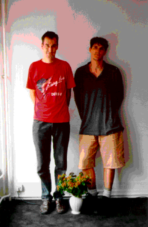

öperatieve die zich enkel bezighield met digitale muziek en multimedia. Met de noodzakelijke apparatuur voor eigen werk en voor het aantrekken van geïnteresserden en gelijkgezinden. Nee, geen mengpaneel of microfoons in de studio, enkel digitale spullen. En die worden ingezet voor het editeren en monteren van klank en structuur. Voor het componeren hebben ze eigenhandig de hulpmiddelen geprogrammeerd. Het uitvoerend ensemble is een netwerk van computers en geluidsmodules. De software is het hybriede samensmelten van compositietools en realtime editing voor klank en beeld. Ergens staat een computer teksten te zingen. Stijl? Zeker geen danspasjes op proberen, alhoewel, hier en daar duiken ritmische passages op en gaan ze wel eens knarsen en schuren. En voor je het weet zit je mee te bangen. Waar ze helemaal mee begaan zijn is nieuwe technologie en wetenschap. Genetica, smart materials, artificial life. En nieuwe uitvindingen. Daar gaan de teksten trouwens over. Bij hun laatste performance musiceerden twee spelers via een vintage TV-video-game. Het spelverloop werd geanalyseerd en omgezet in complexe maar verrassende muziekstrukturen. Maar allemaal met de YOUNG FARMERS CLAIM FUTURE stempel: artisanaal digitaal en klaar voor de nieuwe wereld.
Met een dergelijke bagage gingen ze twee jaar geleden bij de culturele centra aankloppen. Vorig jaar zaten ze nog op het ministerie te pleiten voor de subsidiëring van digitale kunst in Vlaanderen, waarbij de kabinetchef structurele onmacht moest bekennen. Ondertussen hadden ze al maanden als Belg-op-Internet staan pronken op de ISEA94 server in Finland. Vijftig mega aan movies, sounds, images en tekst. Datzelfde jaar werden ze door SIGGRAPH geselecteerd voor de officiële conferentiemuziek. Ook deden ze in volstrekt Olympische geest mee aan de wedstrijd 'New Voices, New Visions' van WIRED en Voyager. Niets gesubsidieerd. Want het Internet was nog e-mail en bbs in Vlaanderen. En van cultuur op een netwerk hadden nog weinigen gehoord.
Maar voor Nederland kon het wel. Het experimentele STEIM Amsterdam gaf hen carte blanche in de studio's en lijmde hen als beta-testers voor wat avontuurlijke software. YOUNG FARMERS CLAIM FUTURE bleven een paar maanden binnen en binnenkort komt er dan ook een CD uit, 'Unploughed', met inclusief een datatrack voor de CD-ROMmers onder ons.
Ondertussen ligt ook Vlaanderen met een kabel teveel. Monopolies worden doorbroken. Net als onze moderne bedrijven onderkennen de culturele centra de impact van de informatiesnelweg op hun doelgroep. YOUNG FARMERS CLAIM FUTURE krijgt plots meer aanzoeken dan een consultancy bureau. Allemaal voor Internet-advies. Maar een artistiek project zit er nog steeds niet in.
In de Beursschouwburg wordt het dus ook geen concert, wel een blik in de werkkamer. Naast een demonstratie van de Web-pages van YOUNG FARMERS CLAIM FUTURE ('The Barn') en uitleg over de realisatie ervan, belichten ze hun computer-muzikale activiteiten . Op de koop toe doen ze een uitstap naar hun favoriete plaatsen op het Net. :-/
{kind=link}